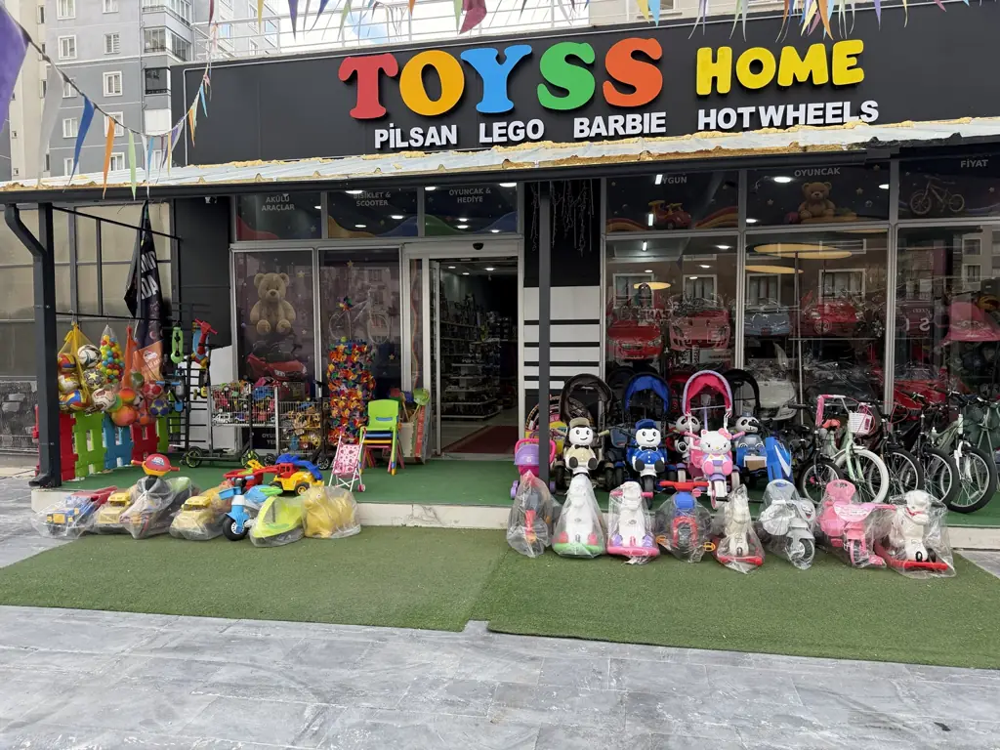

KAYSERİ · TALAS
Oyuncağın
yeni evi.
Sevilen markalar, rengârenk reyonlar ve her yaşa uygun oyuncaklar. TOYSS HOME’da keşfedecek çok şey var.
Favori reyonuna
tek dokunuşla git.
Markayı seç, mağazamızdan ilgili kareleri gör.
Marka düğmeleri ilgili oyuncak fotoğraflarını gösterir.
TALAS’TA YAKINDAN KEŞFET
Oyuncak seçmek
keyifli bir keşif.
Kayseri Talas’taki TOYSS HOME’da; yapı ve kutu oyunlarından peluşlara, bebek oyuncaklarından akülü araçlara kadar farklı yaşlara hitap eden seçenekleri bir arada bulabilirsin.
Mağazadan fotoğrafları görMAĞAZAMIZDAN GÜNCEL KARELER
İçeri buyur,
birlikte gezelim.
Talas’taki oyuncak mağazamızın reyonlarına göz at. Beğendiğin ürünleri mağazada yakından incelemek için bize uğra.
30 fotoğraf
BİZİ TAKİP ET
Yeni oyuncakları
kaçırma.
Mağazamızdan daha fazla kare ve paylaşımlarımız için Instagram’da TOYSS HOME’a göz at.
@toysshomee hesabını ziyaret etYOLUNU BEKLİYORUZ
Oyuncağın yeni
evine uğra.
Kayseri Talas’taki mağazamıza gel, oyuncak çeşitlerini yakından incele.
Google Haritalar’da konumumuzu açıp kolayca ulaşabilirsin.